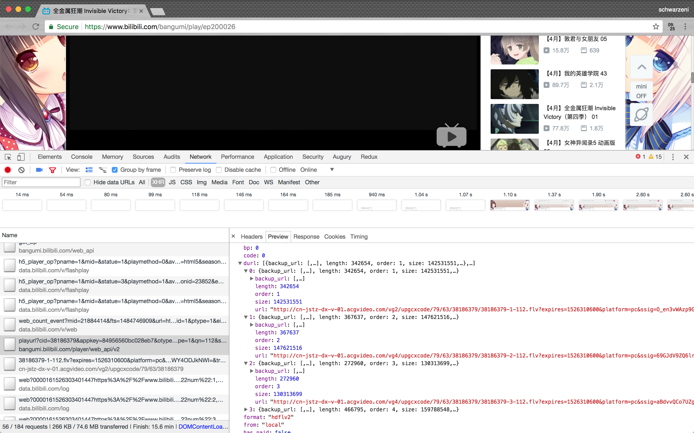

注：本文仅介绍思路，并不包含具体的代码实现
前言
浏览器有丰富的下载视频插件，但是我还是希望可以搞清其中下载的原理 :-p
工具
带开发者工具的浏览器一只，本人使用超级厉害的Chrome
播放原理
目前据笔者了解，不管是b站，还是爱奇艺优酷，都把一个整视频分成了一系列的分段视频，6-7min为一段。
第一次页面加载时其实并没有视频的链接地址，如果你会审查HTML元素的话会发现video标签的src的值是一段奇怪的链接
真正的步奏是页面加载的同时页面的js脚本向服务器发起一个请求来获取分段视频地址，我们需要做的就是模拟浏览器发起这个请求来进而来获取分段视频地址
b站和优酷对于返回浏览器端的分段视频地址并没做什么加密，而爱奇艺则是加密了返回的数据
加载流程分析！
首先打开一个视频界面，这里用本人超级喜欢的全金属狂潮举例，选取第四集，链接为 https://www.bilibili.com/bangumi/play/ep200026
选择菜单打开开发者工具
选择 Network 选项，刷新页面，发现有好多数据加载进来了有木有！！
选择 XHR 对数据进行过滤，仅显示异步请求（也就是在不刷新浏览器的情况下浏览器和服务器之间进行交互），找到类似与红圈圈出的URL https://bangumi.bilibili.com/player/web_api/v2/playurl xxxx，这东西就是我们需要的链接！
为什么呢，查看其返回JSON数据的详情

看到木有，分段视频的地址就在其中，你完全可以用你喜欢的编程语言提取出其中的数据
再选择 Other 对数据进行过滤，看到没有，第一分段正在加载中
这样，我们就完成了对b站视频加载流程的分析
编写下载程序的思路
你可以选择任何你喜欢的编程语言来实现下载的需求，当然，建议编写并发的程序，因为单个视频下载速度就两三百k，但是正好它已经帮我分段好了那何不多个分段一起下载呢。
我是使用golang编写的，有几个分段就开几个协程进行下载，基本可以跑满我宿舍网的带宽
在编写的过程中注意在发起HTTP请求时候的header设置，不管是获取分段链接还是对分段进行下载，尽可能把自己的程序伪装成浏览器
当然，比如 Referer,Cookie这类的header你可以写在一个配置文件中，而像分段视频的Host你可以对URL进行解析动态生成出来
贴一张我的截图吧，我就是采用编写配置文件的方法，虽然有点笨，但是下载速度还是蛮快的，你可以获取一堆分段的地址，然后一口气一起下，非常爽的！
把分段视频放在一个文件夹里，圈在一起打开就行了，顺路安利一个Mac平台超级好用的播放器 IINA

这个代码方法github上了，我觉得写的有点乱最好还是不要看了233